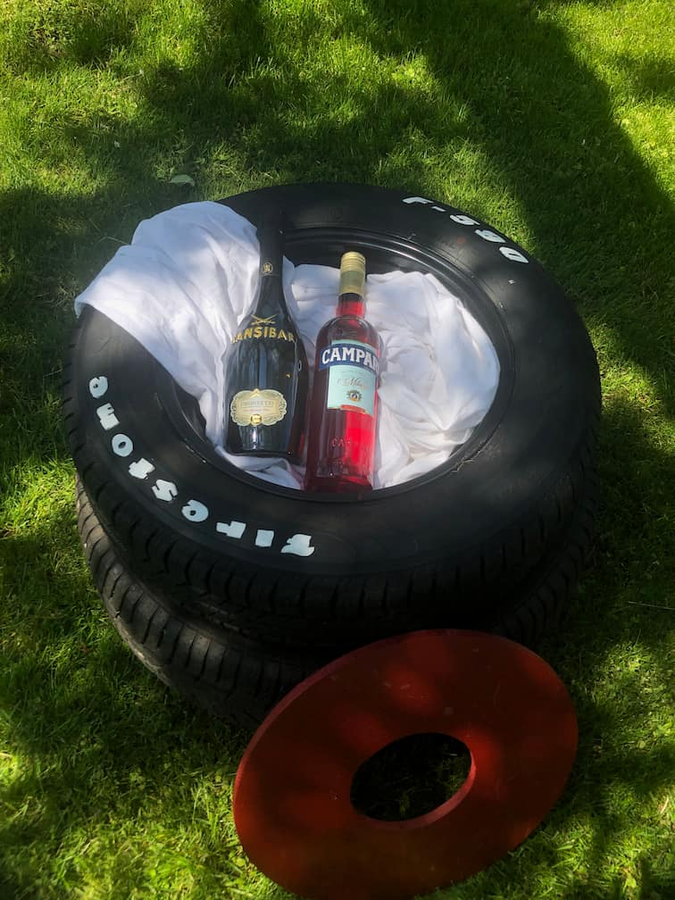
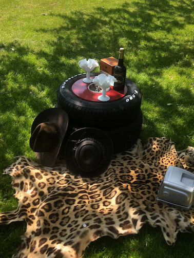
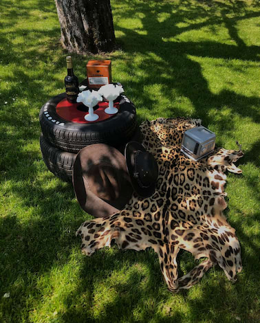
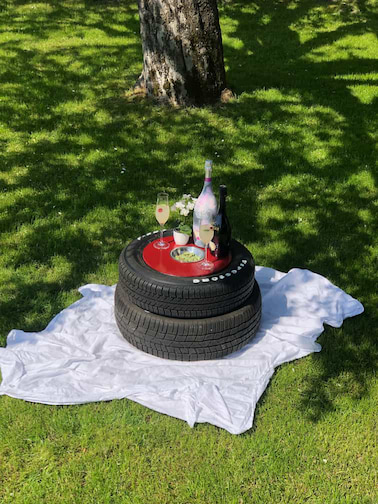
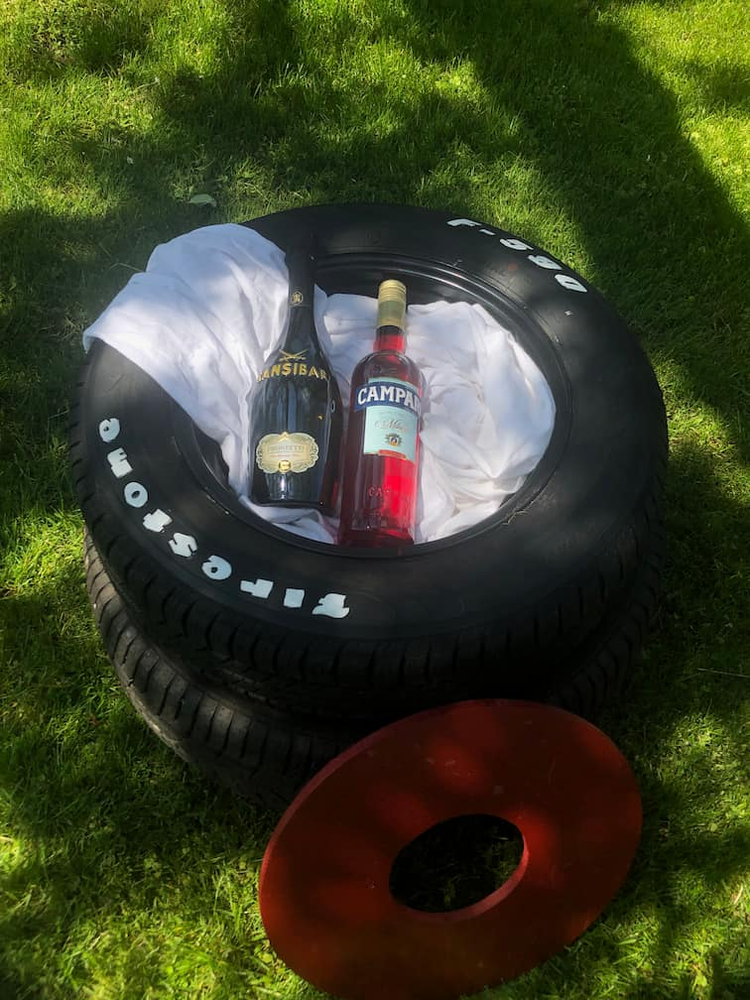
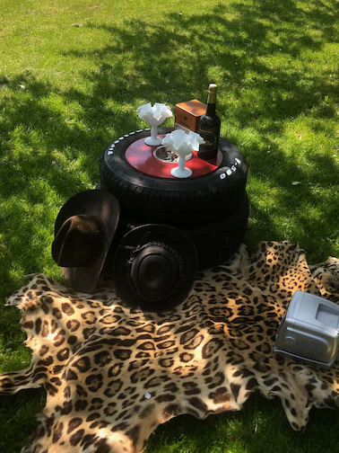
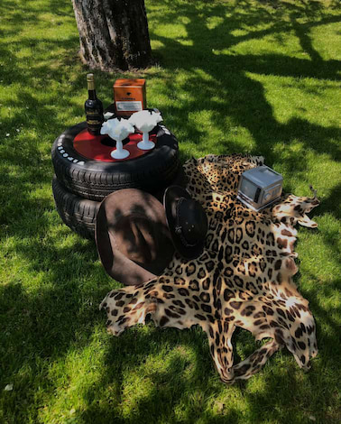
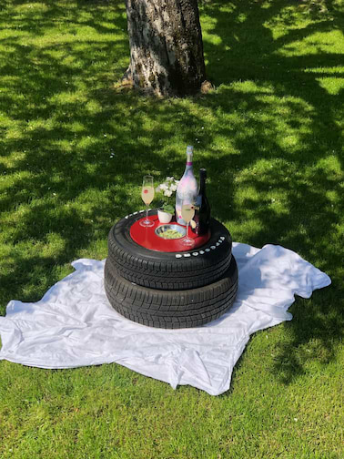

The table is ideal for picnics, providing a convenient surface for placing drinks and the central round section could be used as an ashtray or snack container. The interior of the table can also be utilized for storing blankets, snacks, or additional beverages. This finished project not only combines functional elements but also gives new and creative purpose to old materials. In the context of our second-semester Industrial Design project, we were tasked with creating a Ready-Made piece using discarded materials. For my project, I chose to repurpose two old tires by connecting them and affixing them to a board with wheels. Onto this structure, I placed a precisely cut round plate that closely followed the contour of the tire. The fabrication of the round plate was done using a jigsaw and careful measurements to ensure a perfect fit. This process was repeated for another circular section in the middle of the structure. Subsequently, I sprayed the plate with several layers of red automotive paint and sealed it with a clear coat. During the drying process, I painted the protruding elements with acrylic paint to enhance the effect of a racing tire. Once everything had dried thoroughly, the plate could be easily inserted and the bowl put into the round extract.